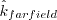
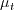

Public Access (formerly Langley Research Center)Turbulence Modeling Resource |
SSG/LRR Full Reynolds Stress Model
This web page gives detailed information
on the equations for various versions of the blended SSG/LRR full second-moment Reynolds stress models, which
use an omega equation for the length scale equation.
Full second-moment Reynolds stress models are very different from simpler one and two-equation
linear/nonlinear models, in that the latter use a constitutive relation giving
the Reynolds stresses Unless otherwise stated, for compressible flow with heat transfer this model is implemented as described on the page
Implementing Turbulence Models into the Compressible RANS Equations, with perfect gas
assumed and Pr = 0.72, Prt = 0.90, and Sutherland's law for dynamic viscosity.
Return to: Turbulence Modeling Resource Home Page SSG/LRR-omega Full Reynolds Stress Model
(SSGLRR-RSM-w2012)
This model was developed within the framework of the European Project FLOMANIA for application
to aeronautical flow problems. It uses a blend of two different pressure-strain models (the LRR
part is based on an earlier version of the WilcoxRSM-w2006 model).
Its main references are:
Note that the most recent papers (listed first) have different coefficients for
and
than the
earlier papers. The newer values are recommended.
Some references also have a minor typo on the sign of the production term in the omega equation
(corrected here).
The full Reynolds stress model solves directly for the Reynolds stresses
Note that this The production term is exact:
The dissipation is modeled via:
where The pressure-strain correlation is modeled via:
where pressure dilatation is neglected, and the anisotropy tensor is:
The pressure-strain coefficients are blended (as described below) between Launder-Reece-Rodi (LRR)
(J. Fluid Mech. vol. 68, no. 3, 1975, pp. 537-566,
https://doi.org/10.1017/S0022112075001814)
near walls (without wall-correction terms)
and Speziale-Sarkar-Gatski (SSG) (J. Fluid Mech. vol. 227, 1991, pp. 245-272,
https://doi.org/10.1017/S0022112091000101)
away from walls. Also:
Neglecting the pressure diffusion component, the diffusion term is modeled via a generalized gradient diffusion model
(Daly and Harlow, Phys Fluids 13:2634-2649, 1970,
http://doi.org/10.1063/1.1692845):
The fluctuating mass flux All of the coefficients are blended (similar to
Menter's SST model), via:
Here, d is the distance to the nearest wall. The coefficients are as follows:
The inner (superscript "( (Note that
the
value has been modified to achieve better agreement with the log layer of a zero
pressure gradient boundary layer.)
The outer (superscript "()") coefficients
are:
Boundary conditions were not given in the original reference.
However, in the farfield they are (ref: private communication with the author):
with the 
and
set by the user. The former value is a function of farfield turbulence intensity, Tu
().
Typical values are: Tu=0.001 (= 0.1%),
where Boundary conditions for RSM are important to handle correctly at symmetry boundaries:
Other Reynolds stress components should receive the usual symmetric treatment (i.e., zero gradient).
Note that the Reynolds stresses should adhere to the following realizability conditions (see, e.g.,
J. Fluid Mech. (1994), vol. 278, pp. 351-362,
https://doi.org/10.1017/S0022112094003745):
Regarding additional modeled terms appearing in the Favre-averaged equations (see
Implementing Turbulence Models into the Compressible RANS Equations),
the turbulent heat flux is modeled via:
where  is obtained
via an "equivalent eddy viscosity":
(ref: private communication with the author).
The terms associated with molecular diffusion and turbulent transport in the energy equation are modeled
as half the trace of the
where:
SSG/LRR-omega Full Reynolds Stress Model
with Simple Diffusion (SSGLRR-RSM-w2012-SD)
This model is the same as (SSGLRR-RSM-w2012), except it uses a "simple diffusion"
(SD) model rather than the generalized gradient diffusion model. Its main reference is:
The diffusion term is modeled via:
SSG/LRR-omega Full Reynolds Stress Model
V2019 (SSGLRR-RSM-w2019)
This model is identical to the original model SSGLRR-RSM-w2012,
except that an additional term involving a length scale correction (LSC)
is included in the omega equation, for the purpose of eliminating
a non-physical "backbending" seen in the original model near reattachment of separated flows.
Its reference is:
In the original model, the following term in the omega equation:
SSG/LRR-omega Full Reynolds Stress Model V2019
with Simple Diffusion (SSGLRR-RSM-w2019-SD)
This model is the same as (SSGLRR-RSM-w2019), except it uses the "simple diffusion"
(SD) model rather than the generalized gradient diffusion model (see description under
(SSGLRR-RSM-w2012-SD)).
Return to: Turbulence Modeling Resource Home Page
Recent significant updates:  in terms of other tensors via some assumed relation (such as Boussinesq's hypothesis).
On the other hand, full second-moment Reynolds stress models compute each of the 6 Reynolds stresses
directly (the Reynolds stress tensor is symmetric so there are 6 independent
terms). Each Reynolds stress has its own transport equation.
There is also a seventh transport equation for the lengthscale-determining variable.
in terms of other tensors via some assumed relation (such as Boussinesq's hypothesis).
On the other hand, full second-moment Reynolds stress models compute each of the 6 Reynolds stresses
directly (the Reynolds stress tensor is symmetric so there are 6 independent
terms). Each Reynolds stress has its own transport equation.
There is also a seventh transport equation for the lengthscale-determining variable.
 (which
correspond to
(which
correspond to  as described on the page
Implementing Turbulence Models into the Compressible RANS Equations).
In other words, using the notation of this website:
as described on the page
Implementing Turbulence Models into the Compressible RANS Equations).
In other words, using the notation of this website:
 definition is the negative of the
definition is the negative of the
 used in the
WilcoxRSM-w2006 model.
The six Reynolds stress equations and one length scale equation are given by:
used in the
WilcoxRSM-w2006 model.
The six Reynolds stress equations and one length scale equation are given by:
![\frac{\partial (\overline \rho \omega)}{\partial t} +
\frac{\partial (\overline \rho \hat u_k \omega)}{\partial x_k}
= \frac{\alpha_{\omega} \omega}{\hat k} \frac{\overline \rho P_{kk}}{2} -
\beta_{\omega} \overline \rho \omega^2 + \frac{\partial}{\partial x_k}
\left[ \left( \overline \mu + \sigma_{\omega} \frac{\overline \rho \hat k}{\omega} \right)
\frac{\partial \omega}{\partial x_k} \right] +
\sigma_d \frac{\overline \rho}{\omega} {\rm max} \left( \frac{\partial \hat k}{\partial x_j}
\frac{\partial \omega}{\partial x_j}, 0 \right)](rsm-ssglrromega_eqns/img18.png)

 ,
and
,
and  .
.
![\overline \rho \Pi_{ij} = - \left( C_1 \overline \rho \varepsilon +
\frac{1}{2} C_1^* \overline \rho P_{kk} \right) \hat a_{ij} +
C_2 \overline \rho \varepsilon \left( \hat a_{ik} \hat a_{kj} -
\frac{1}{3} \hat a_{kl} \hat a_{kl} \delta_{ij} \right) +
\left( C_3 - C_3^* \sqrt{\hat a_{kl} \hat a_{kl}} \right)
\overline \rho \hat k \hat S_{ij}^* +
C_4 \overline \rho \hat k \left( \hat a_{ik} \hat S_{jk} +
\hat a_{jk} \hat S_{ik} - \frac{2}{3} \hat a_{kl} \hat S_{kl} \delta_{ij} \right) +
C_5 \overline \rho \hat k \left( \hat a_{ik} \hat W_{jk} + \hat a_{jk} \hat W_{ik} \right)](rsm-ssglrromega_eqns/img11.png)

 is neglected.
is neglected.


 )") (near-wall)
coefficients are:
)") (near-wall)
coefficients are:


 .
At solid walls:
.
At solid walls:
 is the distance from the wall to the nearest field solution point. This latter
boundary condition is the same as that recommended in
Menter, F. R., AIAA Journal, Vol. 32, No. 8, August 1994, pp. 1598-1605,
https://doi.org/10.2514/3.12149.
is the distance from the wall to the nearest field solution point. This latter
boundary condition is the same as that recommended in
Menter, F. R., AIAA Journal, Vol. 32, No. 8, August 1994, pp. 1598-1605,
https://doi.org/10.2514/3.12149.

 (no summation on i)
(no summation on i)

 (no summation on i or j)
(no summation on i or j)
 term. For the generalized
gradient diffusion model, this is:
term. For the generalized
gradient diffusion model, this is:
with:
![\overline \rho D_{ij} = \frac{\partial}{\partial x_k}
\left[ \left( \overline \mu + D \frac{\overline \rho \hat k^2}{\varepsilon}
\right) \frac{\partial \hat R_{ij}}{\partial x_k} \right]
= \frac{\partial}{\partial x_k}
\left[ \left( \overline \mu + D \frac{\overline \rho \hat k}{C_{\mu} \omega}
\right) \frac{\partial \hat R_{ij}}{\partial x_k} \right]
= \frac{\partial}{\partial x_k}
\left[ \left( \overline \mu + \frac{D}{C_{\mu}} \mu_t
\right) \frac{\partial \hat R_{ij}}{\partial x_k} \right]](rsm-ssglrromega_eqns/img71.png)
gets replaced with:

where
and
and
with d=distance to the nearest wall, ,
, and

 .
The
.
The  term should be
active only near stagnation/reattachment points. When
is zero,
the original model is recovered.
term should be
active only near stagnation/reattachment points. When
is zero,
the original model is recovered.
01/25/2022 - removed "/" from naming convention because it sometimes causes problems/confusion
12/11/2019 - added description of new SSG/LRR-RSM-w2019 and SSG/LRR-RSM-w2019-SD
03/24/2016 - mention realizability of Reynolds stresses
Page Curators: Christopher Rumsey,
Ethan Vogel,
Clark Pederson
Last Updated: 01/25/2022